HISTORY & LORE
From a kingdom in the epics to a silk town under the Mughals to a modern district office — Bhagalpur's story runs a long way back.
The Kingdom of Anga
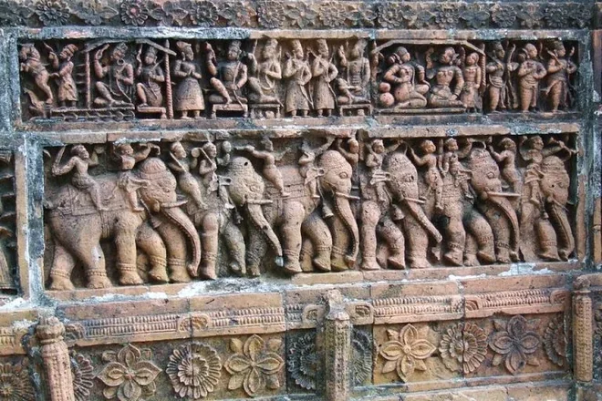
Epic connections: according to the Mahabharata, the warrior Karna was crowned king of Anga by Duryodhana — and the ruins of Karnagarh, still standing in the city today, are popularly traced back to this ancient kingdom.
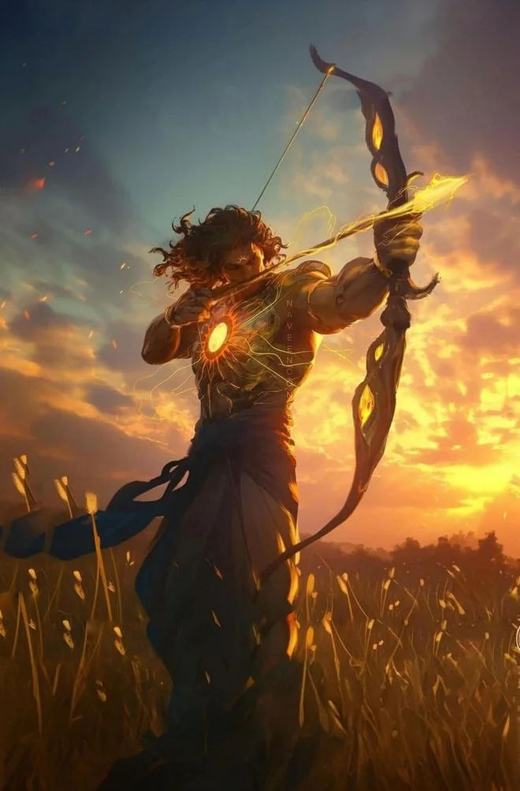
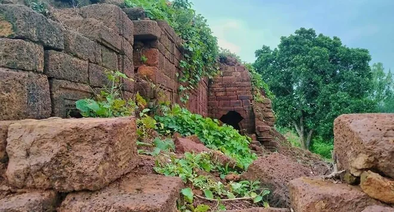
A crossroads of faiths: ancient Champa, Bhagalpur's predecessor city, was a meeting point for multiple religious traditions. Lord Mahavira is said to have spent several rainy-season retreats here, and the 12th Jain Tirthankara, Vasupujya, is traditionally held to have been both born and to have attained nirvana in Champa.
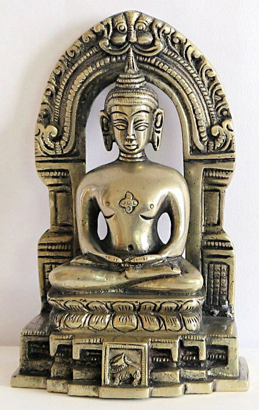
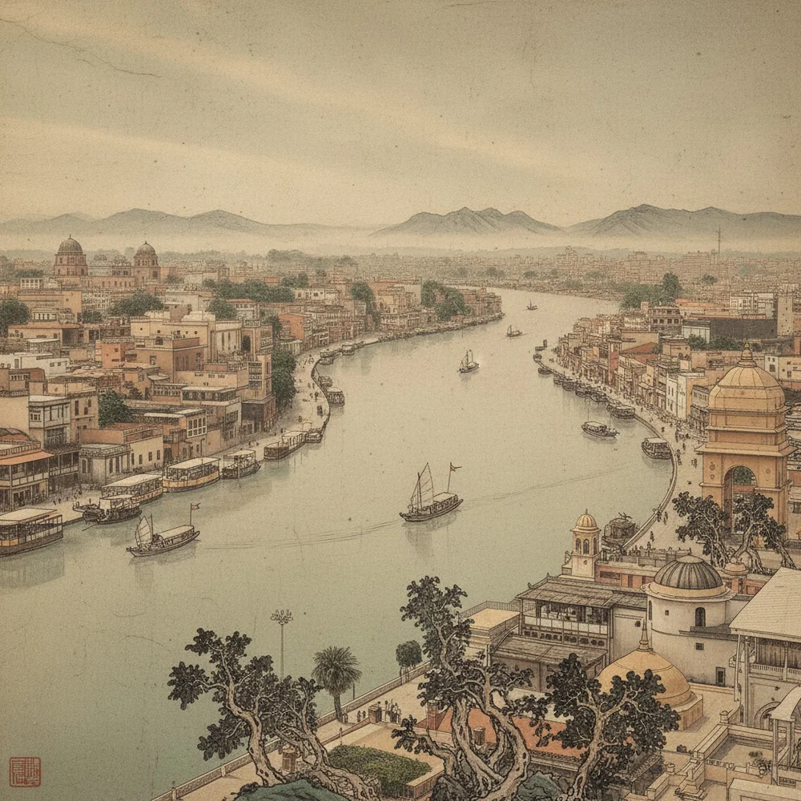
A port on the trade routes: Champa operated as a busy river port, trading in spices and perfumes, and its scale and prosperity were recorded by the Chinese travellers Fa-Hien (Faxian) and Hiuen-Tsang (Xuanzang) during their journeys through India.
Dynasties, Sufis & a great university
Through the medieval period Bhagalpur passed through the hands of the Pala Empire, the Delhi Sultanate, and the Mughal Empire. Under the Palas, King Dharmapala founded Vikramshila Mahavihara in the late 8th century — alongside Nalanda, it became one of the two most important centres of Buddhist learning in India, drawing scholars from across Asia until it was destroyed in the late 12th century.
Under Mughal rule, and especially Akbar's reign, Bhagalpur became an important administrative division and the silk trade flourished further. The city still carries spiritual roots from this era through the Khanqah-e-Pir Damariya Sufi shrine, and the tomb of Shah Shuja, brother of the Mughal emperor Aurangzeb, still stands in the heart of the city.
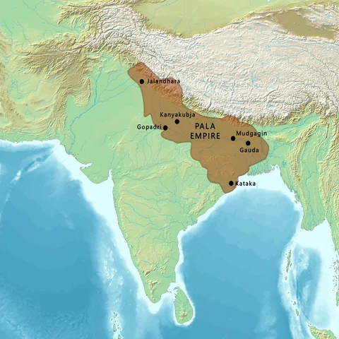
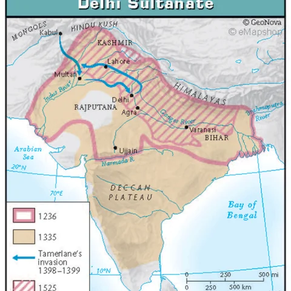
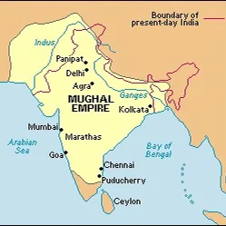
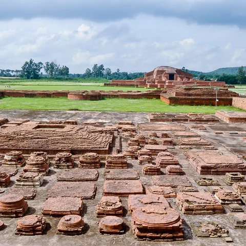
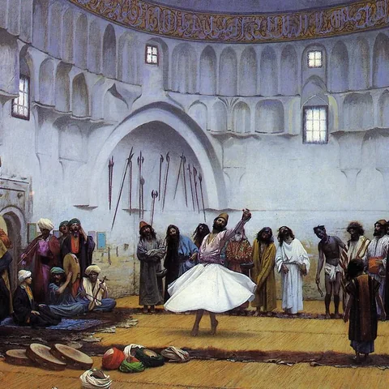
Colonial rule to smart city
Bhagalpur was conceded to the British East India Company in 1765, and grew into a centre for indigo plantation and cloth trade under colonial rule. It later became a municipality in 1864. The region also produced one of India's earliest tribal freedom fighters, Tilka Manjhi, who led the Santhal rebellion against British rule — the city's university is named for him today.
The late 20th century brought harder chapters too, most notably the tragic 1989 riots, which remain part of the city's remembered history. In the decades since, Bhagalpur has grown into an educational hub, a commercial centre for handlooms, and a designated smart-city development zone in eastern Bihar.
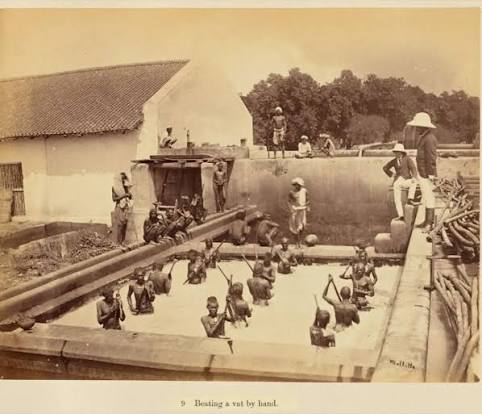
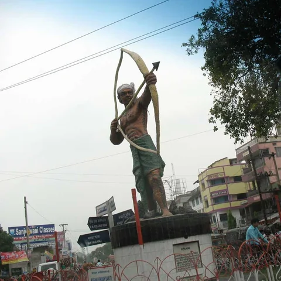
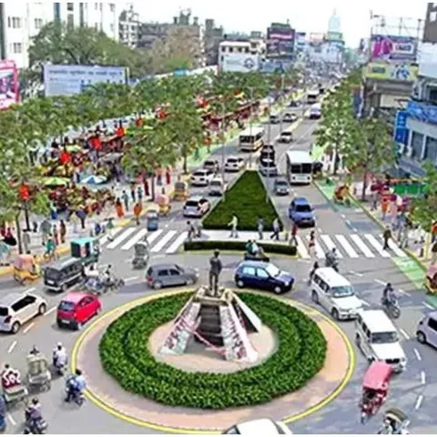
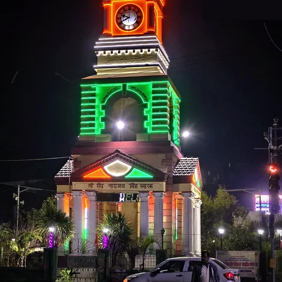
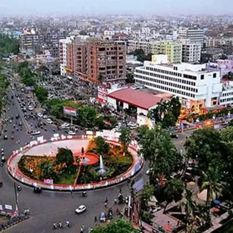
Samudra Manthan and the legend of Behula-Bishahari
Local mythology holds that nearby Mandar Hill was the very axis the gods and demons used to churn the cosmic ocean (Samudra Manthan) in search of the elixir of life, Amrit — the ridges still visible on its granite rock are said to be marks left by the serpent Vasuki, wound around the hill as the churning rope.
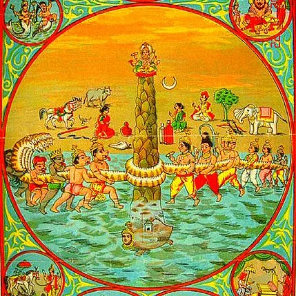
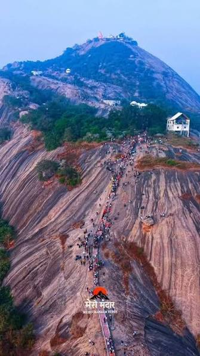
The region's best-loved folk story, though, is the legend of Behula-Bishahari: Behula's journey to save her husband Lakshmindar from the wrath of the snake goddess Manasa. This is the story behind the city's annual Bishahari Puja, and it gave rise to Manjusha art — a sequential, scroll-like folk painting tradition, rendered in a signature palette of pink, green, and yellow, that tells the tale panel by panel on temple-shaped boxes.
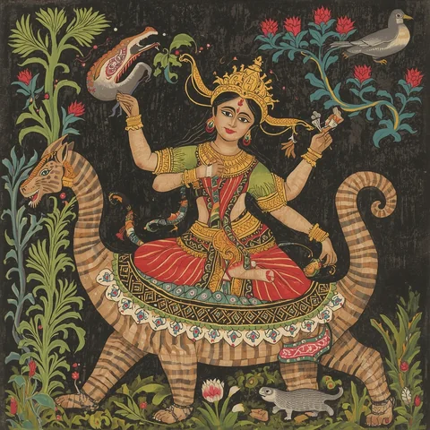